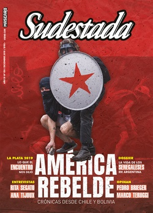

Buscar
Edición N° 159
Diciembre 2019
Revista bimensual
Comprar edición impresaSumario
- Un continente en disputa
- La batalla de Chile
- Diario urgente de un golpe
- Te gusta vivir así
- Una fiesta feminista en el corazón de La Plata
- Un asco recíproco nos permite convivir
- El día que descubrieron a Colón
- Los días sin Ana
- “Hay una catástrofe de género, es necesario darse cuenta”
- Cantoras del Chile rebelde
- El freestyle es de las pibas
- Echando raíces
- "Se puede cuestionar este mundo difícil cantando"